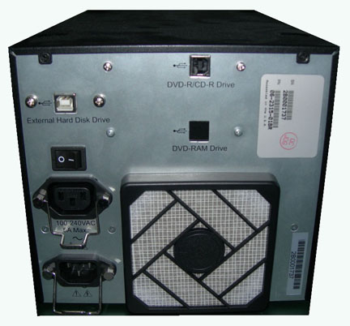
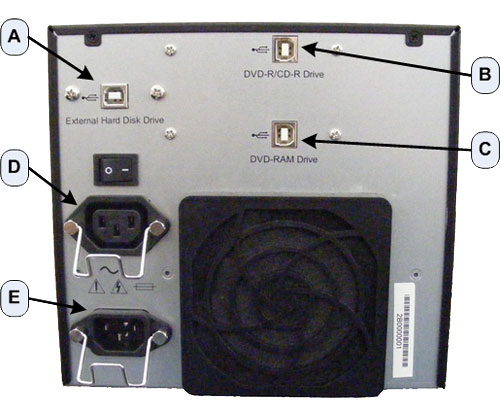

Operating Documentation
Direction 5193574-800, Rev# 22
LightSpeed 7.X Service Methods
Module Version 4.0, Version Date 11/8/10
Operating Documentation |
| Required Persons | Preliminary Reqs | Procedure | Finalization |
|---|---|---|---|
| 1 | 0 min | 30 mins | 30 mins |
This procedure describes and illustrates the steps necessary to replace the DVD Peripheral Tower.
| Last revised: | 31 October 2010 |
NOTE: There are two different versions of the USB DVD Peripheral Tower. This procedure will work for all versions, pictorially depicting the DVD-RW and DVD-RAM Drive version (Illustrations 1 & 2); and DVD-Multimedia version (Illustrations 3 & 4). The DVD-Multimedia version will accommodate all types of media as long as they are inserted properly.
Illustration 1: DVD-RW and DVD-RAM Front

Illustration 2: DVD-RW and DVD-RAM Rear

Illustration 3: DVD-Multimedia Front

Illustration 4: DVD-Multimedia Rear

| Item | Qty | Effectivity | Part# | Manufacturer | |
|---|---|---|---|---|---|
| Standard FE Toolkit | 1 | - | - | - | |
| Item | Qty | Effectivity | Part# | Manufacturer | |
|---|---|---|---|---|---|
| DVD Peripheral Tower Assembly (2 Bay: DVD-RW/DVD-RAM) | 1 or | - | 5270510-3 | - | |
| DVD Peripheral Tower (1 Bay: DVD-Multimedia) | 1 | - | 5270510-10 | - | |
| ||||
| FOLLOW ALL REQUIRED SAFETY AND PPE PROCEDURES CUSTOMARY FOR YOUR ORGANIZATION WHEN WORKING ON THIS PRODUCT. | ||||
| Condition | Reference | Effectivity |
|---|---|---|
Access to the DVD Peripheral Tower is required. Make sure adequate space is available on console table top. | - | - |
Only trained service personnel should service the GE CT Scanner. | - | - |
System requires a power-down sequence when replacing the DVD Peripheral Tower. Operating System may not recognize the USB port connections if the DVD Peripheral Tower is replaced without cycling the console power.
Select one of the following methods to power off the Operator Console:
If applications are running, click the Shut Down icon and select Shut Down.
If applications are down, open a Unix Shell using the Toolchest. Type: {ctuser@hostname} synce, sync, halt , then press <Enter>.
The Operator Console monitor will display a System Halted message when it is acceptable to power off the Operator Console.
Power OFF the Operator Console at the front panel switch (Illustration 5.)
Illustration 5: Console Power Switch

Remove the USB cable connections from the back of the peripheral tower chassis being replaced.
| NOTE: | Verify that all cables are labeled and clearly marked; if necessary, add a label for clarity. |
Remove the power cord(s) at the rear of the DVD Peripheral Tower chassis.
Remove the DVD Peripheral Tower and set aside.
Place the replacement DVD Peripheral Tower chassis on the Operator Console.
Mount the power cord(s) to the rear of the DVD Peripheral Tower chassis. Verify that the power switch on the DVD Peripheral Tower power supply is turned to the ON position.
Replace the rear USB cable connections.
Illustration 6: DVD Peripheral Tower Connections

| Item | Description - Destination |
| A | External USB Hard Drive - Host Computer, USB Hub Card, Port 2 |
| B | DVD-RW or Multimedia Drive (only on 1 Bay Units) - Host Computer, Motherboard USB Port |
| C | DVD-RAM Drive (not used on 1 Bay Units) - Host Computer, Motherboard USB Port |
| D | Power Cord - MOD Drive (optional) |
| E | Power Cord - Rear Bulkhead Panel J5 |
| NOTE: | It is important that the USB Cables be connected to their assigned ports on the Host Computer and the DVD Peripheral Drive Tower to maintain proper drive assignment. Refer to the appropriate interconnect located in the System Diagrams folder of this service methods publication. |
The Data Export Option License install script creates a configuration file to remember the device to use. Changing the PMT after Data Export Option License is installed changes the device to use and therefore the configuration file is no longer correct. To fix this issue, the Option License must be uninstalled and reinstalled.
Uninstall Data Export Option License following instructions found in Install Software Options .
Reinstall Data Export Option License following instructions found in Install Software Options .
Power ON the Operator Console at the console front panel switch. Visually verify the Peripheral Tower front panel Power LED is illuminated and that each of the DVD Drive Access LEDs illuminates when media is inserted and the tray closed.
Verify that the cooling fan at the rear of the DVD Peripheral Tower is operational.
No other verifications required.
Refer to Peripheral Tower Functional Test to confirm proper operation.